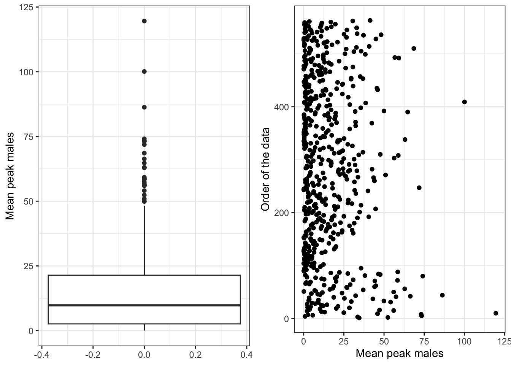
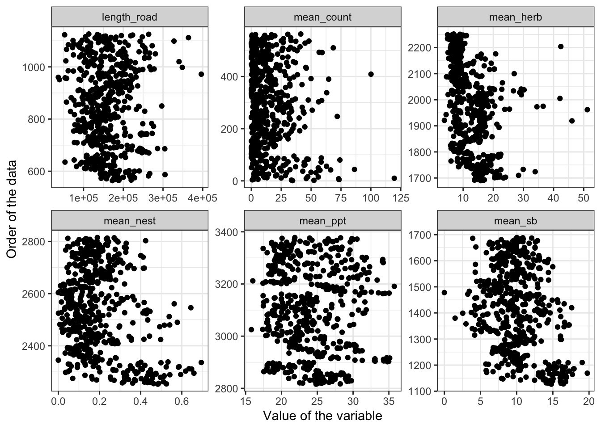
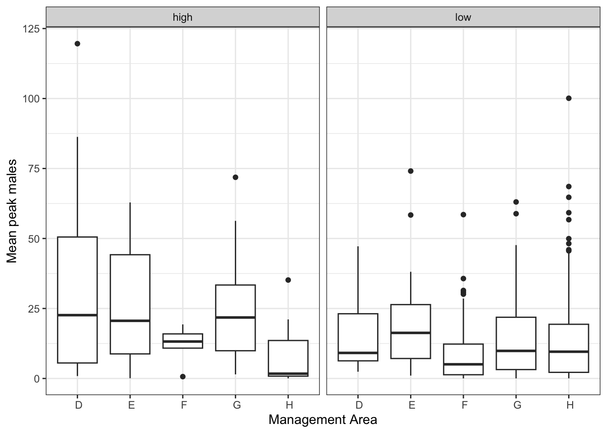
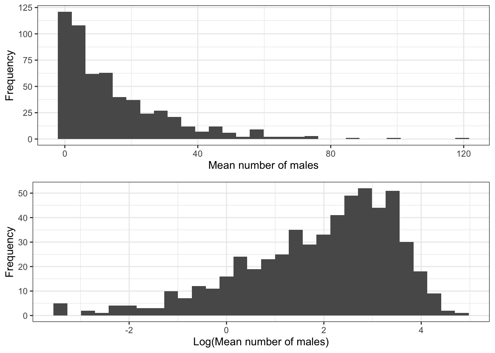
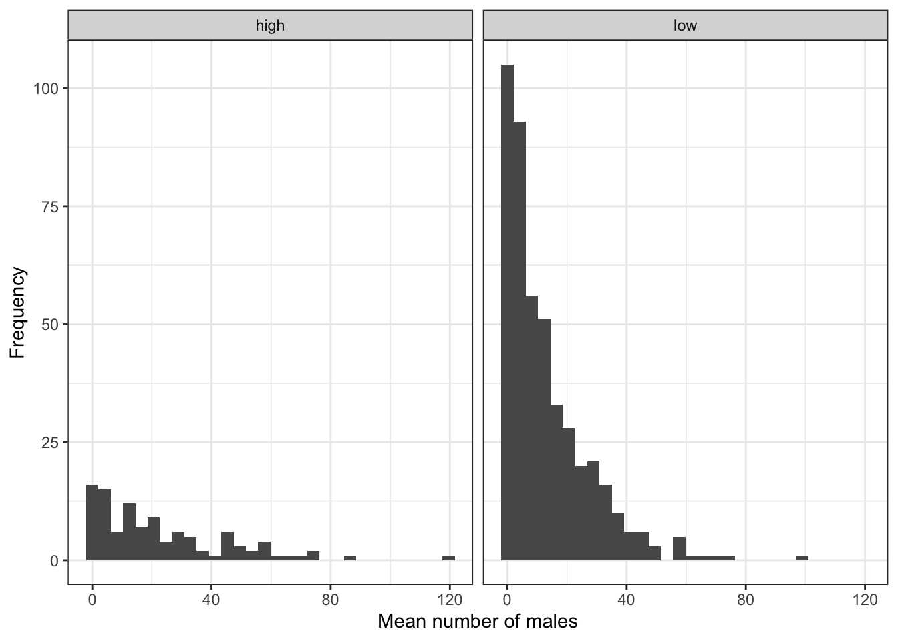
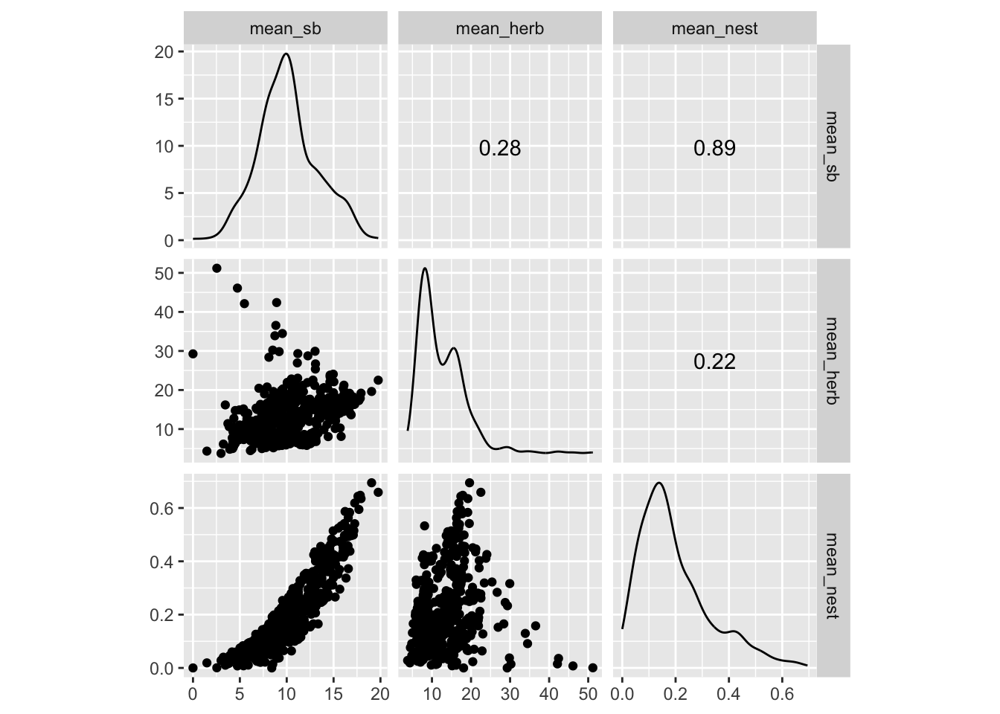

Chapter 6 Data Exploration
Before conducting any statistical analysis you need to graphically explore your data. There are many packages within R to assist you with the process of data exploration. Many of the reasons behind data exploration and methodology are outlined in a review article in Methods in Ecology and Evolution by Zuur et al. (2010). We are pattern matching machines. We have evolved to visually detect patterns among the chaos. It is important to use that strength to visually inspect your data, understand its nuances, and allow that information to help inform your analyses in model structure.
We will cover general (and generalized) linear models in detail later in the course. However, it is necessary to introduce a simple model here to better explain why we recommend generating the plots in this chapter.
\[y_i = \beta_0 + \beta_1x_1 + \beta_2x_2 + ...+ \beta_jx_i + \epsilon_i\]
In this model, we are trying to understand the relationship between a number of covariates (\(x_1, x_2\)) on the response variable of interest (\(y_i\)). The \(x_i\) and \(y_1\) represent actual data and measurements we have gathered. The model used that information to estimate the relationships among those variables. The shape and direction of the relationship between a particular \(x_i\) and our response variable \(y_i\) is describe by the slope estimates (e.g., \(\beta_1, \beta_2\)). In this relatively simple example, the model estimates two other parameters. The model intercept, \(\beta_0\) and the error term \(\epsilon_i\). This type of model can contain multiple \(x\) variables and both the \(y\) and \(x\) values may be discrete (i.e, values are individual, separated and distinct) or continuous (i.e., unbroken values between a range). The nature of the data (i.e., continuous or discrete) will change how you plot the variables. For this example, we will work with sage-grouse lek data.
One of the key questions driving much of wildlife ecology (honestly, much of most of ecology) is: how many animals are there? With the obvious follow up question of: why? Animal populations are influenced by a wide variety of environmental feature. Suppose we were interested in determining if mean peak male counts (continuous \(y\) variable) were influenced by landscape or climate variables (continuous \(x\) variables) within the different management units (i.e., a discrete \(x\) variable) or within high and low nesting quality habitats (i.e., another discrete \(x\) variable). Before you begin with the code you need to load the lek data and add a grouping factor named “nest_type” which divides the leks into high (>0.3) and low suitability (<=0.3). This was covered in previous chapters.
Unfortunately, in almost all field-base research, missing data is a reality. This is true of the sage-grouse data that we are using. Not all leks are surveyed every year. We will discuss how to deal with missing data in more depth in other parts of the course. For now, we want to remove leks from the analysis that have ‘too much’ missing data. We have chosen a 50% missing data as a cutoff for inclusion based on research by Dr. Fedy exploring the impact of missing data and frequency of counts on lek population dynamic estimates. Therefore, we create a new lek dataset for exploration and analysis, by removing any leks where no individuals were counted across the whole time period (i.e., inactive leks) and those with more than 50 percent missing data. We are not going to do any statistical analysis on this dataset for now, but below we use graphical analysis to test a number of the statistical assumptions outlined in Zuur et al. (2010).
library('ggplot2')
leks<-read.csv("DATA/wysg_peak_males.csv",sep=",",header=TRUE)
leks$nest_type<-"low" # create a nesting suitability variable
leks[leks$mean_nest>0.3,"nest_type"]<-"high" # change rows with values > 0.3 to 'high'
leks_sub<-leks[leks$max_count != 0,] # subset with non-zero rows
leks_sub<-leks_sub[leks_sub$per_miss < 50,] # subset for missing data6.1 Outliers
Statistical outliers (i.e., data points that are distant from other data points in the dataset) can dominate the results of statistical analysis. Thus, outliers should be identified prior to statistical analysis so they can be removed or fixed if proper justification is found (e.g., error in data entry) or their effects on the analyses can be quantified if they are true biological outliers. As in Zuur et al., 2010 we use box plots and Cleveland dot plots on our y variable. You will see below that although there are no egregious outliers, some may warrant attention. To create the 2-panel plot, we will use the cowplot package. Don’t forget to install and load the package before using the functions that require cowplot. Try and play around a bit with the plot_grid function, see how you can create different plot displays.
# To make the two panel plot, we first assign the two plots to objects in R
# Create the boxplot
boxplot <- ggplot(leks_sub, aes(y=mean_count))+
geom_boxplot() +
labs(y="Mean peak males") +
theme_bw()
# Create the Cleveland dot chart
dotplot <- ggplot(leks_sub, aes(x=mean_count, y=seq(1, length(mean_count),1))) +
geom_point() +
labs(x="Mean peak males", y = "Order of the data") +
theme_bw()
# Now plot them in the same window using the cowplot package
#install.packages("cowplot", quiet=TRUE) # code for installing package
library("cowplot", quietly=TRUE)
cowplot::plot_grid(boxplot, dotplot)
In the previous chapter we created multipanel plots using the facet_grid function. Here we used the cowplot to create a multipanel plot that displays the results from the two separate plots. Below we plot the mean peak male count and a number of landscape and climatic factors that are potentially having an effect on the number of males in a single plot. Before creating this plot, we create a subset matrix that can be used with the facet_wrap function. Once we create the new susbet matrix of data that only contains the mean_count and climate variables of interest, we will use code formatted based on the ‘tidyverse’, which uses pipes (%>%), to format the dataset prior to plotting. The ‘tidyverse’ is a popular data science group of packages and coding style used to ‘tidy’ messy data to facilitate analysis and visualization. I use ‘tidyverse’ occasionally, but I am not a diehard convert. If you want to delve deeper into the ‘tidyverse’ I recommend the excellent book, R for Data Science which delves deep into the tidyverse universe and covers many important topics in data science. I take a pragmatic approach throughout this book and the course. I do not really care what packages you use, as long as it works.
# create a matrix by binding only the columns we are interested in
ex_data<-cbind(leks_sub$mean_count,leks_sub$length_road,leks_sub$mean_sb,
leks_sub$mean_herb,leks_sub$mean_nest,leks_sub$mean_ppt)
# name the columns
colnames(ex_data)<-c("mean_count","length_road","mean_sb",
"mean_herb","mean_nest","mean_ppt")
# create a new data set by converting the matrix to a data frame
ex_data2 <- ex_data %>%
as.data.frame() %>%
gather(key = "variable", value = "value")
# plot the data
ggplot(ex_data2, aes(x=value, y=seq(1, length(value),1))) +
geom_point() +
labs(x="Value of the variable", y = "Order of the data") +
theme_bw() +
facet_wrap(~variable, scales = "free")
6.2 Homoscedasticity (homegeneity of variance)
An important assumption in many statistical analysis is that variance (i.e., spread of data points) is similar between groups (e.g., sexes, different experimental treatments). Essentially, this assumption means that the residuals from a model have equal variance (homoscedasticity) for every fitted value and the predictors. Meeting this assumption ensures accurate calculation of standard errors for the parameter estimates. Thus, if we were interested in determining if the mean peak number of males for leks was different depending on the management area or the surrounding categorical nesting quality it would be important to explore this assumption. Here we see the true value of these graphing packages as they easily allow us to compare the distributions within one or more grouping factors using a box plot.
ggplot(leks_sub, aes(x=man_area, y=mean_count))+
geom_boxplot()+
labs(x="Management Area", y="Mean peak males")+
theme_bw()+
facet_wrap(~nest_type)
Based on the plots above, it appears that we are violating the assumption of homogeneity of variance with some management areas having much lower variation in mean peak counts than others. We will discuss how to deal with this type of situation later in the course. But, these results suggest we may need to refine our research questions or account for these differences in our model development. Homoscedacity assumption determines how many variances are to be estimated: either one overall variance of the response variable, or several variances for different values of the explanatory variables. In the latter case, both the mean and the variance of the response variable change with the explanatory variables. We will get deeper into this when we discuss General(ized) Linear Models in later chapters particularly when we are discussing model fit.
6.3 Distribution of the response variable
An assumption in many statistical analyses is that your y variable is normally distributed. A simple way to assess this assumption is to visualize your data using a histogram. Here we use a two panel plot to plot both the mean peak number of males and the log(peak number of males), which is a common statistical transformation used to closer approximate a normal distribution.
hist_mean <- ggplot(leks_sub, aes(x=mean_count)) +
geom_histogram(bins=30) +
labs(x="Mean number of males", y="Frequency")+
theme_bw()
hist_log <- ggplot(leks_sub, aes(x=log(mean_count))) +
geom_histogram(bins=30) +
labs(x="Log(Mean number of males)", y="Frequency")+
theme_bw()
cowplot::plot_grid(hist_mean, hist_log, nrow=2)
Again the lattice package can also be useful for plotting multi-panel plots with multiple variables. Here we use the grouping factor (nest_type) to look for normality within each nest group at the same time.
ggplot(leks_sub, aes(x=mean_count))+
geom_histogram(bins=30)+
labs(x="Mean number of males", y="Frequency")+
facet_wrap(~nest_type)+
theme_bw()
6.4 Collinearity among x variables
When x variables (i.e., predictors) are highly correlated it is difficult to determine their independent effect on the y variable. Thus, it is always a good idea to determine the level of correlation among your predictors. Here we use a scatter plot to visualize the collinearity between the three landscape variables in the ex_data dataframe. Here will use the ggscatmat function from the GGally package to visualize the correlation between variables. You will also notice in the plot that there is a strong positive correlation between sagebrush habitat and nesting quality, which is not surprising given the ecology of sage-grouse and their association with this habitat type.
## Registered S3 method overwritten by 'GGally':
## method from
## +.gg ggplot2